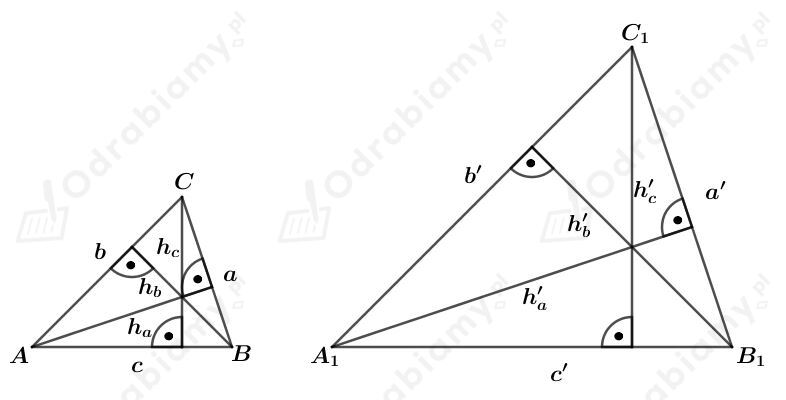
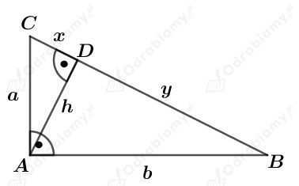

Rysunek:

Z treści zadania wiemy, że:
Wyznaczmy pole trójkąta ABC. Mamy:
stąd:
Wyznaczmy pole trójkąta A1B1C1. Mamy:
stąd:
Wyznaczmy stosunek długości boku AB do boku A1B1. Mamy:
Ponownie, wyznaczmy stosunek długości boku AB do boku A1B1. Mamy:
Zatem otrzymaliśmy zależność:
Zatem trójkąty ABC i A1B1C1 są podobne na mocy cechy BBB.
Rysunek:

a)
Zapiszmy pole trójkąta ABC na dwa sposoby. Mamy:
oraz
Porównujemy otrzymane wielkości i mamy:
b)
Zauważmy, że na mocy cechy KKK, trójkąty BDA i ADC są podobne. Mamy stąd:
c)
Zauważmy, że na mocy cechy KKK, trójkąty ABC i DAC są podobne. Mamy stąd:
d)
Zauważmy, że na mocy cechy KKK, trójkąty ABC i DBA są podobne. Mamy stąd:
Wiedząc, że boki trójkąta ABC są równoległe do odpowiednich boków trójkąta DEF mamy:
oraz
Trójkąty ABC i DEF są podobne na mocy cechy podobieństwa KKK.
Z treści zadania wiemy, że
dzięki czemu mamy:
Wiemy również, że:
ponieważ są to kąty przyległe do kąta o mierze 𝛾.
Zatem trójkąty EAB i BCD są podobne na mocy cechy podobieństwa BKB.
Niech k będzie skalą podobieństwa trójkąta EAB do trójkąta BCD. Mamy wtedy:
Wyznaczmy stosunek obwodów trójkątów EAB i BCD. Mamy: